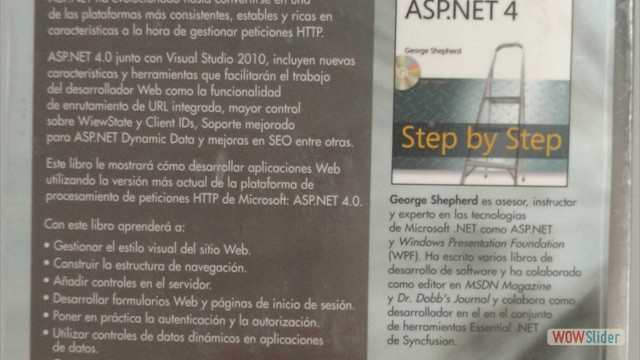
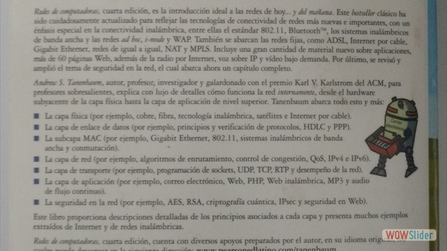
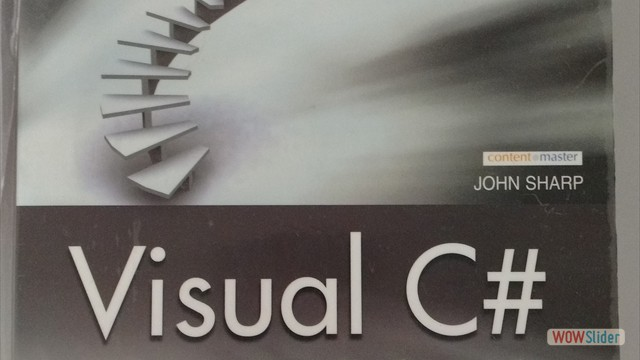

Bibliografia Programacion

- 


- 


- 

 1
1 2
2 4
4 5
5 6
6 7
7 8
8 9
9 11
11 12
12 13
13 14
14 15
15 18
18 20
20 21
21bootstrap slider by WOWSlider.com v8.7
Descargar o Visualizar Gratuitamente
http://www.grupocultural.com/catalogo-grupo-cultural-detalle.php?id=91&id_categoria=14
Comprar Libro
https://www.maslibros.mx/mantenimiento-y-reparacion-de-computadoras-p-1283
Descargar o Visualizar Gratuitamente
https://docs.google.com/file/d/0B1znxPN5ACgSbHhVU1RaVFh0cVU/edit
Comprar Libro
https://www.amazon.com/Java-Como-programar-ed-incluye/dp/9702611903
Plantas de cable y de cableado 35
Hardware de las estaciones de trabajo 36
Resumen del capitulo 37
4.- Cableado de las redes 39
Topologías del cableado 40
Topología bus 41
Topología estrella 43
Topología anillo
Comparación de la Topología anillo con las Topología estrella y bus 46
Desmitificación del cableado de las redes46
Tipos básicos de cable 49
Cableado por trenzado: el rey de los cables de red 50
Cable coaxial 54
Instalación y mantenimiento del cableado de la red 56
Selección del proveedor del cableado 57
Resolución de los problemas de cableado 58
Resumen del capítulo 60
5.- Conectividad de redes domésticas 61
Beneficios de la conectividad de redes domésticas 62
Selección de una tecnología para una red doméstica 63
Hardware estándar de red 63
Inalámbrica u otras opciones de conectividad de redes 64
Resumen del capítulo 65
6.- Comprensión del hardware de las redes 67
Dirigiendo el tráfico de la red 68
Repetidores 69
Hubs y concentradores 69
Switches 71
Puentes 74
Ruteadores 74
Compuertas 75
Protección de una red contra firewalls 76
Conexión de dispositivos RS-232 con métodos de corto alcance 77
Resumen del capítulo 78
7.- Conexiones entre WAN 79
Determinación de las necesidades de la WAN 80
Análisis de los requerimientos
¿Conmutado o dedicado? 81
¿Privado o público? 82
Tipos de conexión de la WAN 83
Servicio telefónico convencional (POST) 84
Red digital de servicios integrados (ISDN) 84
Línea digital de suscriptor (DSL) 86
Conexiones t-1/T-3 (DS1/DS3)
Modo de transferencia asincrónica (ATM) 88
X.25 89
Resumen del capitulo 89
8.- Protocolo de conectividad de redes 91
Comprensión de TCP y UDP 92
Puertos TCP y UDP 93
Paquetes IP y direccionamiento IP 94
Subredes IP
Mascaras de subred 98
Comprensión de otros protocolos de Internet 100
Sistema de nombres de dominio 101
Protocolo dinámico de configuración del Host (DJHCP) 102
Protocolo de transferencia de hipertexto (HTTTP)
Protocolo de transferencia de archivos (FTP) 103
Protocolo de transferencia Netnews (NNTP) 104
Telnet 105
Protocolo simple de trasferencia de correo (SMTP) 105
Voz sobre IP (VoIP) 105
Comparación de los protocolos propietarios importante 108
IPX/SPX de Novell 108
Protocolos NetBIOS y NetBEUI 109
Apple Talk 109
Resumen del capitulo 110
9.-Servicios de directorio 111
¿Que es un servicio de directorio? 112
Bosques, árboles, raíces y hojas 114
Departamento del departamento de redundancia 115
Servicios específicos de directorio 116
EDirectory 117
Dominios Windows NT 117
Directorio activo 118
X.500 119
lDAP 119
Resumen del capitulo 121
10.-Conexiones a larga distancia: acceso remoto a redes 123
Clasificar a los usuarios remotos 124
Determinar las necesidades de acceso remoto 128
Aprender las tecnologías del acceso remoto
Nodo remoto en comparación con control remoto 130
Modem o no Modem, esa es la pregunta 132
Redes privadas virtuales 135
Resumen del capítulo 141
11.- Asegurando su red 143
Comprender la seguridad interna 145
Seguridad de las cuentas 146
Permisos de archivo y de directorio 149
Prácticas y educación del usuario 150
Comprender las amenazas externas 151
Amenazas en la puerta de 152
Amenazas en la puerta de atrás 154
Amenazas de negación del servicio 155
Virus y otro software malicioso 156
Resumen del capítulo 157
12.-Restablecimiento de los desastres de la red 159
Notas desde el lugar de los hechos: la ciudad de Seattle 160
Planes de restablecimiento en caso de desastre 164
Análisis de necesidades 164
Escenarios de desastres 165
Comunicación 167
Almacenamiento fuera del sitio
Componentes críticos de la reconstrucción 168
Respaldo y restablecimiento de la red
Evaluación de las necesidades 169
Adquisición de tecnologías y medios de respaldo 170
Selección de las estrategias de respaldo 172
Resumen del capitulo 176
13.- Servidores de red: todo lo que quería saber pero temía
Preguntar 177
Diferencias entre un servidor y una estación de trabajo 178
Procesadores de servidor 178
Capacidad de bus 181
RAM 182
Subsistemas del disco 183
Supervisión del estado del servidor 189
Componentes intercambiables 190
Selección de servidores par Windows y Netware 190
Definición de las necesidades 190
Selección del servidor 192
Compra del sistema 194
Instalación de los servidores 195
Mantenimiento y reparación de servidores 196
Resumen del capítulo 198
14.-Compra y administración de computadoras cliente 199
Selección de las computadoras de escritorio 200
Plataformas de escritorio 200
Confiabilidad y servicio 203
Precio y desempeño 205
Requerimientos de las estaciones de trabajo de la red 206
Hardware de las estaciones de trabajo de la red 206
Software de las estaciones de trabajo de la red 207
Resumen del capítulo 210
Parte II
Conocimiento por medio de la práctica
15.- Diseño de una red 213
Evaluación de las necesidades de la red 215
Aplicaciones 216
Usuarios 218
Servicios de red 219
Seguridad y protección 220
Planeación de la capacidad y el crecimiento 221
Satisfacción de las necesidades de la red
Selección del tipo de red 222
Selección de la estructura de la red 223
Selección de los servidores 224
Resumen del capitulo 225
16.-Instalación y configuración de Windows 2000 Server 227
Las versiones de Windows 2000 228
Preparación de la instalación 229
Verificación de la compatibilidad de hardware 230
Verificación de la configuración del hardware 230
Prueba del hardware del servidor 232
Reconocimiento del servidor antes de implantar una mejora en el sitio 233
Toma de decisiones en la etapa de la preinstalación 233
¡Espere! ¡Respalde antes de actualizar! 236
Instalación del Windows 2000 Server 236
Ejecución del programa de instalación del Windows 2000 Server 236
Instalación del Windows 2000 Server 240
Fin de la Instalación del Windows 2000 Server 242
Configuración de un servidor cliente
Creación de una cuenta de usuario 246
Creación de un folder compartido 248
Configuración de un cliente Windows 9x para acceder a un servidor 249
Prueba de la conexión de cliente 251
Resumen del capítulo 252
17.-Administración de Windows 2000 Server: los fundamentos 253
Comentaros sobre la seguridad de las redes 254
Trabajo con cuentas de usuario 255
Adición de un usuario 256
Modificación de una cuenta de usuario 258
Eliminación o inhabilitación de una cuenta de usuario 263
Trabajos con grupos de seguridad Windows (2000) 263
Creación de grupos 264
Mantenimiento de lo miembros de los grupos 267
Trabajo con comparticiones 268
Comprensión de la seguridad de la compartición 268
Creación de comparticiones 270
Exploración de los controladores 272
Administración de los comparticiones de impresora 273
Configuración de una impresora de red 274
Trabajo con el respaldo de Windows 2000 278
Utilización del software de respaldo de Windows 2000 Server 281
Resumen del capitulo 285
18.-Otros servicios de Windows 2000 Server 287
Exploración del protocolo de configuración dinámica del anfitrión 288
(DHCP) 288
Investigación del sistema de nombre de dominio (DNS) 289
Comparación del servicio de acceso remoto (RAS) y el RRAS 291
Exploración del servidor de información de Internet (IIS) 293
Empleo de servicios de grupo 294
Servicio de terminal de Windows 294
Resumen del capítulo 296
19.- Windows Server 2003 297
Las nuevas características de Windows Server 2003 de Microsoft 298
Ediciones de Windows Server (2003) 298
Características nuevas y mejoradas en Windows Server (2003) 299
Ilustración de las características de Windows Server 2003
Tasas del servidor 302
Administración de la Web 303
Copias de sombra del volumen 304
1 Introducción a las computadoras, Internet y Web 1
1.1 Introducción 2
1.2 ¿Qué es una computadora? 4
1.3 Organización de una computadora 4
1.4 Los primeros sistemas operativos 5
1.5 Computación personal, distribuida y cliente/servidor 5
1.6 Internet y World Wide Web 6
1.7 Lenguajes máquina, ensambladores y de alto nivel 6
1.8 Historia de C y C++ 7
1.9 Historia de Java 8
1.10 Bibliotecas de clases de Java 8
1.11 FORTRAN, COBOL, Pascal y Ada 9
1.12 BASIC, Visual Basic, Visual C++, C# y .NET 10
1.13 Entorno de desarrollo típico en Java 10
1.14 Generalidades acerca de Java y este libro 13
1.15 Prueba de una aplicación en Java 14
1.16 Ejemplo práctico de Ingeniería de Software: introducción a la tecnología de objetos y UML 19
1.17 Web 2.0 23
1.18 Tecnologías de software 24
1.19 Conclusión 24
1.20 Recursos Web 25
2 Introducción a las aplicaciones en Java 34
2.1 Introducción 35
2.2 Su primer programa en Java: imprimir una línea de texto 35
2.3 Modifi cación de nuestro primer programa en Java 41
2.4 Cómo mostrar texto con printf 43
2.5 Otra aplicación en Java: suma de enteros 44
2.6 Conceptos acerca de la memoria 48
2.7 Aritmética 49
2.8 Toma de decisiones: operadores de igualdad y relacionales 52
2.9 (Opcional) Ejemplo práctico de Ingeniería de Software: cómo examinar el documento
de requerimientos de un problema 56
2.10 Conclusión 65
3 Introducción a las clases y los objetos 75
3.1 Introducción 76
3.2 Clases, objetos, métodos y variables de instancia 76
00_MAQ_PRELIMINARES.indd vii 4/30/08 12:24:31 AM
viii Contenido
3.3 Declaración de una clase con un método e instanciamiento de un objeto de una clase 77
3.4 Declaración de un método con un parámetro 81
3.5 Variables de instancia, métodos establecer y métodos obtener 84
3.6 Comparación entre tipos primitivos y tipos por referencia 88
3.7 Inicialización de objetos mediante constructores 89
3.8 Números de punto fl otante y el tipo double 91
3.9 (Opcional) Ejemplo práctico de GUI y gráfi cos: uso de cuadros de diálogo 95
3.10 (Opcional) Ejemplo práctico de Ingeniería de Software: identifi cación de las clases en un
documento de requerimientos 98
3.11 Conclusión 105
4 Instrucciones de control: parte 1 112
4.1 Introducción 113
4.2 Algoritmos 113
4.3 Seudocódigo 114
4.4 Estructuras de control 114
4.5 Instrucción de selección simple if 116
4.6 Instrucción de selección doble if...else 117
4.7 Instrucción de repetición while 121
4.8 Cómo formular algoritmos: repetición controlada por un contador 123
4.9 Cómo formular algoritmos: repetición controlada por un centinela 127
4.10 Cómo formular algoritmos: instrucciones de control anidadas 134
4.11 Operadores de asignación compuestos 138
4.12 Operadores de incremento y decremento 139
4.13 Tipos primitivos 142
4.14 (Opcional) Ejemplo práctico de GUI y gráfi cos: creación de dibujos simples 142
4.15 (Opconal) Ejemplo práctico de Ingeniería de Software: identifi cación de los atributos de las clases 146
4.16 Conclusión 150
5 Instrucciones de control: parte 2 164
5.1 Introducción 165
5.2 Fundamentos de la repetición controlada por contador 165
5.3 Instrucción de repetición for 167
5.4 Ejemplos sobre el uso de la instrucción for 171
5.5 Instrucción de repetición do...while 174
5.6 Instrucción de selección múltiple switch 176
5.7 Instrucciones break y continue 183
5.8 Operadores lógicos 185
5.9 Resumen sobre programación estructurada 190
5.10 (Opcional) Ejemplo práctico de GUI y gráfi cos: dibujo de rectángulos y óvalos 194
5.11 (Opcional) Ejemplo práctico de Ingeniería de Software: cómo identifi car los estados
y actividades de los objetos 197
5.12 Conclusión 200
6 Métodos: un análisis más detallado 211
6.1 Introducción 212
6.2 Módulos de programas en Java 212
6.3 Métodos static, campos static y la clase Math 214
6.4 Declaración de métodos con múltiples parámetros 216
6.5 Notas acerca de cómo declarar y utilizar los métodos 219
6.6 Pila de llamadas a los métodos y registros de activación 221
6.7 Promoción y conversión de argumentos 221
00_MAQ_PRELIMINARES.indd viii 4/30/08 12:24:32 AM
Contenido ix
6.8 Paquetes de la API de Java 222
6.9 Ejemplo práctico: generación de números aleatorios 224
6.9.1 Escalamiento y desplazamiento generalizados de números aleatorios 227
6.9.2 Repetitividad de números aleatorios para prueba y depuración 227
6.10 Ejemplo práctico: un juego de probabilidad (introducción a las enumeraciones) 228
6.11 Alcance de las declaraciones 232
6.12 Sobrecarga de métodos 235
6.13 (Opcional) Ejemplo práctico de GUI y gráfi cos: colores y fi guras rellenas 238
6.14 (Opcional) Ejemplo práctico de Ingeniería de Software: identifi cación de las operaciones
de las clases 241
6.15 Conclusión 246
7 Arreglos 260
7.1 Introducción 261
7.2 Arreglos 261
7.3 Declaración y creación de arreglos 262
7.4 Ejemplos acerca del uso de los arreglos 264
7.5 Ejemplo práctico: simulación para barajar y repartir cartas 272
7.6 Instrucción for mejorada 274
7.7 Paso de arreglos a los métodos 276
7.8 Ejemplo práctico: la clase LibroCalificaciones que usa un arreglo para
almacenar las califi caciones 279
7.9 Arreglos multidimensionales 284
7.10 Ejemplo práctico: la clase LibroCalificaciones que usa un arreglo bidimensional 288
7.11 Listas de argumentos de longitud variable 293
7.12 Uso de argumentos de línea de comandos 294
7.13 (Opcional) Ejemplo práctico de GUI y gráfi cos: cómo dibujar arcos 296
7.14 (Opcional) Ejemplo práctico de Ingeniería de Software: colaboración entre los objetos 299
7.15 Conclusión 305
8 Clases y objetos: un análisis más detallado 325
8.1 Introducción 326
8.2 Ejemplo práctico de la clase Tiempo 327
8.3 Control del acceso a los miembros 330
8.4 Referencias a los miembros del objeto actual mediante this 331
8.5 Ejemplo práctico de la clase Tiempo: constructores sobrecargados 333
8.6 Constructores predeterminados y sin argumentos 338
8.7 Observaciones acerca de los métodos Establecer y Obtener 338
8.8 Composición 340
8.9 Enumeraciones 342
8.10 Recolección de basura y el método finalize 345
8.11 Miembros de clase static 345
8.12 Declaración static import 350
8.13 Variables de instancia final 351
8.14 Reutilización de software 353
8.15 Abstracción de datos y encapsulamiento 354
8.16 Ejemplo práctico de la clase Tiempo: creación de paquetes 355
8.17 Acceso a paquetes 360
8.18 (Opcional) Ejemplo práctico de GUI y gráfi cos: uso de objetos con gráfi cos 361
8.19 (Opcional) Ejemplo práctico de Ingeniería de Software: inicio de la programación de las clases
del sistema ATM 364
8.20 Conclusión 369
00_MAQ_PRELIMINARES.indd ix 4/30/08 12:24:32 AM
x Contenido
9 Programación orientada a objetos: herencia 378
9.1 Introducción 379
9.2 Superclases y subclases 380
9.3 Miembros protected 382
9.4 Relación entre las superclases y las subclases 382
9.4.1 Creación y uso de una clase EmpleadoPorComision 383
9.4.2 Creación de una clase EmpleadoBaseMasComision sin usar la herencia 387
9.4.3 Creación de una jerarquía e herencia EmpleadoPorComision-
EmpleadoBaseMasComision 391
9.4.4 La jerarquía de herencia EmpleadoPorComision-EmpleadoBaseMasComision
mediante el uso de variables de instancia protected 394
9.4.5 La jerarquía de herencia EmpleadoPorComision-EmpleadoBaseMasComision
mediante el uso de variables de instancia private 399
9.5 Los constructores en las subclases 404
9.6 Ingeniería de software mediante la herencia 409
9.7 La clase object 410
9.8 (Opcional) Ejemplo práctico de GUI y gráfi cos: mostar texto e imágenes usando etiquetas 411
9.9 Conclusión 413
10 Programación orientada a objetos: polimorfi smo 417
10.1 Introducción 418
10.2 Ejemplos del polimorfi smo 419
10.3 Demostración del comportamiento polimórfi co 420
10.4 Clases y métodos abstractos 423
10.5 Ejemplo práctico: sistema de nómina utilizando polimorfi smo 425
10.5.1 Creación de la superclase abstracta Empleado 426
10.5.2 Creación de la subclase concreta EmpleadoAsalariado 426
10.5.3 Creación de la subclase concreta EmpleadoPorHoras 429
10.5.4 Creación de la subclase concreta EmpleadoPorComision 431
10.5.5 Creación de la subclase concreta indirecta EmpleadoBaseMasComision 432
10.5.6 Demostración del procesamiento polimórfi co, el operador instanceof y
la conversión descendente 433
105.7 Resumen de las asignaciones permitidas entre variables de la superclase y de la subclase 437
10.6 Métodos y clases final 438
10.7 Ejemplo práctico: creación y uso de interfaces 439
10.7.1 Desarrollo de una jerarquía PorPagar 440
10.7.2 Declaración de la interfaz PorPagar 441
10.7.3 Creación de la clase Factura 441
10.7.4 Modifi cación de la clase Empleado para implementar la interfaz PorPagar 443
10.7.5 Modifi cación de la clase EmpleadoAsalariado para usarla en la jerarquía PorPagar 445
10.7.6 Uso de la interfaz PorPagar para procesar objetos Factura y Empleado
mediante el polimorfi smo 446
10.7.7 Declaración de constantes con interfaces 448
10.7.8 Interfaces comunes de la API de Java 448
10.8 (Opcional) Ejemplo práctico de GUI y gráfi cos: realizar dibujos mediante el polimorfi smo 449
10.9 (Opcional) Ejemplo práctico de Ingeniería de Software: incorporación de la herencia en
el sistema ATM 451
10.10 Conclusión 457
00_MAQ_PRELIMINARES.indd x 4/30/08 12:24:33 AM
Contenido xi
11 Componentes de la GUI: parte 1 462
11.1 Introducción 463
11.2 Entrada/salida simple basada en GUI con JOptionPane 464
11.3 Generalidades de los componentes de Swing 467
11.4 Mostrar texto e imágenes en una ventana 469
11.5 Campos de texto y una introducción al manejo de eventos con clases anidadas 474
11.6 Tipos de eventos comunes de la GUI e interfaces de escucha 479
11.7 Cómo funciona el manejo de eventos 481
11.8 JButton 483
11.9 Botones que mantienen el estado 486
11.9.1 JCheckBox 486
11.9.2 JRadioButton 489
11.10 JComboBox y el uso de una clase interna anónima para el manejo de eventos 492
11.11 JList 495
11.12 Listas de selección múltiple 497
11.13 Manejo de eventos de ratón 500
11.14 Clases adaptadoras 504
11.15 Subclase de JPanel para dibujar con el ratón 507
11.16 Manejo de eventos de teclas 510
11.17 Administradores de esquemas 513
11.17.1 FlowLayout 514
11.17.2 BorderLayout 517
11.17.3 GridLayout 520
11.18 Uso de paneles para administrar esquemas más complejos 522
11.19 JTextArea 523
11.20 Conclusión 526
12 Gráfi cos y Java 2DTM 539
12.1 Introducción 540
12.2 Contextos y objetos de gráfi cos 542
12.3 Control de colores 542
12.4 Control de tipos de letra 548
12.5 Dibujo de líneas, rectángulos y óvalos 554
12.6 Dibujo de arcos 558
12.7 Dibujo de polígonos y polilíneas 560
12.8 La API Java 2D 563
12.9 Conclusión 569
13 Manejo de excepciones 578
13.1 Introducción 579
13.2 Generalidades acerca del manejo de excepciones 580
13.3 Ejemplo: división entre cero sin manejo de excepciones 580
13.4 Ejemplo: manejo de excepciones tipo ArithmeticException e InputMismatchException 582
13.5 Cuándo utilizar el manejo de excepciones 587
13.6 Jerarquía de excepciones en Java 587
13.7 Bloque finally 590
13.8 Limpieza de la pila 594
13.9 printStackTrace, getStackTrace y getMessage 595
13.10 Excepciones encadenadas 597
13.11 Declaración de nuevos tipos de excepciones 599
13.12 Precondiciones y poscondiciones 600
00_MAQ_PRELIMINARES.indd xi 4/30/08 12:24:33 AM
xii Contenido
13.13 Aserciones 601
13.14 Conclusión 602
14 Archivos y fl ujos 608
14.1 Introducción 609
14.2 Jerarquía de datos 610
14.3 Archivos y fl ujos 611
14.4 La clase File 613
14.5 Archivos de texto de acceso secuencial 617
14.5.1 Creación de un archivo de texto de acceso secuencial 617
14.5.2 Cómo leer datos de un archivo de texto de acceso secuencial 623
14.5.3 Ejemplo práctico: un programa de solicitud de crédito 625
14.5.4 Actualización de archivos de acceso secuencial 630
14.6 Serialización de objetos 630
14.6.1 Creació de un archivo de acceso secuencial mediante el uso de la serialización
de objetos 631
14.6.2 Lectura y deserialización de datos de un archivo de acceso secuencial 636
14.7 Clases adicionales de java.io 638
14.8 Abrir archivos con JFileChooser 640
14.9 Conclusión 643
15 Recursividad 653
15.1 Introducción 654
15.2 Conceptos de recursividad 655
15.3 Ejemplo de uso de recursividad: factoriales 655
15.4 Ejemplo de uso de recursividad: serie de Fibonacci 658
15.5 La recursividad y la pila de llamadas a métodos 661
15.6 Comparación entre recursividad e iteración 662
15.7 Las torres de Hanoi 664
15.8 Fractales 666
15.9 “Vuelta atrás” recursiva (backtracking) 676
15.10 Conclusión 676
15.11 Recursos en Internet y Web 676
16 Búsqueda y ordenamiento 685
16.1 Introducción 686
16.2 Algoritmos de búsqueda 687
16.2.1 Búsqueda lineal 687
16.2.2 Búsqueda binaria 690
16.3 Algoritmos de ordenamiento 695
16.3.1 Ordenamiento por selección 695
16.3.2 Ordenamiento por inserción 699
16.3.3 Ordenamiento por combinación 702
16.4 Invariantes 708
16.5 Conclusión 709
17 Estructuras de datos 714
17.1 Introducción 715
17.2 Clases de envoltura de tipos para los tipos primitivos 716
17.3 Autoboxing y autounboxing 716
00_MAQ_PRELIMINARES.indd xii 4/30/08 12:24:34 AM
Contenido xiii
17.4 Clases autorreferenciadas 717
17.5 Asignación dinámica de memoria 717
17.6 Listas enlazadas 718
17.7 Pilas 72
17.8 Colas 730
17.9 Árboles 733
17.10 Conclusión 739
18 Genéricos 761
18.1 Introducción 762
18.2 Motivación para los métodos genéricos 762
18.3 Métodos genéricos: implementación y traducción en tiempo de compilación 764
18.4 Cuestiones adicionales sobre la traducción en tiempo de compilación: métodos que utilizan
un parámetro de tipo como tipo de valor de retorno 767
18.5 Sobrecarga de métodos genéricos 770
18.6 Clases genéricas 770
18.7 Tipos crudos (raw) 77
18.8 Comodines en métodos que aceptan parámetros de tipo 783
18.9 Genéricos y herencia: observaciones 787
18.10 Conclusión 787
18.11 Recursos en Internet y Web 787
19 Colecciones 79
19.1 Introducción 793
19.2 Generalidades acerca de las colecciones 794
19.3 La clase Arrays 79
19.4 La interfaz Collection y la clase Collections 797
19.5 Listas 798
19.5.1 ArrayList e Iterator 799
19.5.2 LinkedList800
19.5.3 Vector 805
19.6 Algoritmos de las colecciones 808
19.6.1 El algoritmo sort 809
19.6.2 El algoritmo shuffle 812
19.6.3 Los algoritmos reverse, fill, cpy, max y min 815
19.6.4 El algoritmo binarySearch 816
19.6.5 Los algoritmos addAll, frequency y disjoint 818
19.7 La clase Stack del paquete java.util 820
19.8 La clase PriorityQueue y la interfaz Queue 822
19.9 Conjuntos 23
19.10 Mapas 826
19.11 La clase Properties 829
19.12 Colecciones sincronizadas 832
19.13 Colecciones no modificar cables 833
19.14 Implementaciones abstractas 834
19.15 Conclusión 83
20 Introducción a los applets de Java 841
20.1 Introducción 842
20.2 Applets de muestra incluidos en el JDK 842
20.3 Applet simple en Java: cómo dibujar una cadena 846
00_MAQ_PRELIMINARES.indd xiii 4/30/08 12:24:34 AM
xiv Contenido
20.3.1 Cómo ejecutar un applet en el appletviewer 848
20.3.2 Ejecución de un applet en un explorador Web 850
20.4 Métodos del ciclo de vida de los applets 850
20.5 Cómo inicializar una variable de instancia con el método int 851
20.6 Modelo de seguridad “caja de arena” 853
20.7 Recursos en Internet y Web 853
20.8 Conclusión 854
21 Multimedia: applets y aplicaciones 858
21.1 Introducción 859
21.2 Cómo cargar, mostrar y escalar imágenes 860
21.3 Animación de una serie de imágenes 862
21.4 Mapas de imágenes 867
21.5 Carga y reproducción de clips de audio 869
21.6 Reproducción de video y otros medios con el Marco de trabajo de medios de Java 872
21.7 Conclusión 876
21.8 Recursos Web 876
22 Componentes de la GUI: parte 2 883
22.1 Introduccón 884
22.2 JSlider 884
22.3 Ventanas: observaciones adicionales 888
22.4 Uso de menús con marcos 889
22.5 JPopupMenu 896
22.6 Apariencia visual adaptable 899
22.7 JDesktopPane y JInternalFrame 903
22.8 JTabbedPane 906
22.9 Administradores de esquemas: BoxLayout y GridBagLayout 908
22.10 Conclusión 920
23 Subprocesamiento múltiple 925
23.1 Introducción 926
23.2 Estados de los subprocesos: ciclo de vida de un subproceso 927
23.3 Prioridades y programación de subprocesos 929
23.4 Creación y ejecución de subprocesos 931
23.4.1 Objetos Runnable y la clase Thread 931
23.4.2 Administración de subprocesos con el marco de trabajo Executor 934
23.5 Sincronización de subprocesos 935
23.5.1 Cómo compartir datos sin sincronización 936
23.5.2 Cómo compartir datos con sincronización: hacer las operaciones atómicas 940
23.6 Relación productor/consumidor sin sincronización 943
23.7 Relación productor/consumidor: ArrayBlockingQueue 949
23.8 Relación productor/consumidor con sincronización 952
23.9 Relación productor/consumidor: búferes delimitados 957
23.10 Relación productor/consumidor: las interfaces Lock y Condition 964
23.11 Subprocesamiento múltiple con GUIs 970
23.11.1 Realización de cálculos en un subproceso trabajador 970
23.11.2 Procesamiento de resultados inmediatos con SwingWorker 976
23.12 Otras clases e interfaces en java.util.concurrent 982
23.13 Conclusión 983
00_MAQ_PRELIMINARES.indd xiv 4/30/08 12:24:34 AM
Contenido xv
24 Redes 992
24.1 Introducción 993
24.2 Manipulación de URLs 994
24.3 Cómo leer un archivo en un servidor Web 998
24.4 Cómo establecer un servidor simple utilizando sockets de fl ujo 1001
24.5 Cómo establecer un cliente simple utilizando sockets de fl ujo 1003
24.6 Interacción entre cliente/servidor mediante conexiones de socket de fl ujo 1004
24.7 Interacción entre cliente/servidor sin conexión mediante datagramas 1014
24.8 Juego de Tres en raya (Gato) tipo cliente/servidor, utilizando un servidor con
subprocesamiento múltiple 1021
24.9 La seguridad y la red 1034
24.10 [Bono Web] Ejemplo práctico: servidor y cliente DeitelMessenger 1034
24.11 Conclusión 1035
25 Acceso a bases de datos con JDBC 1041
25.1 Introducción 1042
25.2 Bases de datos relacionales 1043
25.3 Generalidades acerca de las bases de datos relacionales: la base de datos libros 1044
25.4 SQL 1047
25.4.1 Consulta básica SELECT 1047
25.4.2 La cláusula WHERE 1048
25.4.3 La cláusula ORDER BY 1050
25.4.4 Cómo fusionar datos de varias tablas: INNER JOIN 1051
25.4.5 La instrucción INSERT 1053
25.4.6 La instrucción UPDATE 1053
25.4.7 La instrucción DELETE 1054
25.5 Instrucciones para instalar MySQL y MySQL Connector/J 1055
25.6 Instrucciones para establecer una cuenta de usuario de MySQL 1056
25.7 Creación de la base de datos libros en MySQL 1057
25.8 Manipulación de bases de datos con JDBC 1057
25.8.1 Cómo conectarse y realizar consultas en una base de datos 1057
25.8.2 Consultas en la base de datos libros 1062
25.9 La interfaz RowSet 1073
25.10 Java DB/Apache Derby 1075
25.11 Objetos PreparedStatement 1076
25.12 Procedimientos almacenados 1090
25.13 Procesamiento de transacciones 1091
25.14 Conclusión 1091
25.15 Recursos Web y lecturas recomendadas 1092
Los capítulos 26 a 30 así como los apéndices, los encontrará en el CD que acompaña este libro.
26 Aplicaciones Web: arte 1 1101
26.1 Introducción 1102
26.2 Transacciones HTTP simples 1103
26.3 Arquitectura de aplicaciones multinivel 1105
26.4 Tecnologías Web de Java 1106
26.4.1 Servlets 1106
26.4.2 JavaServer Pages 1106
26.4.3 JavaServer Faces 1107
26.4.4 Tecnologías Web en Java Studio Creator 2 1108
00_MAQ_PRELIMINARES.indd xv 4/30/08 12:24:35 AM
xvi Contenido
26.5 Creación y ejecución de una aplicación simple en Java Studio Creator 2 1108
26.5.1 Análisis de un archivo JSP 110
26.5.2 Análisis de un archivo de bean de página 1111
26.5.3 Ciclo de vida del procesamiento de eventos 1115
26.5.4 Relación entre la JSP y los archivos de bean de página 1115
26.5.5 Análisis del XHTML generado por una aplicación Web de Java 1115
26.5.6 Creación de una aplicación Web en Java Studio Creator 2 1117
26.6 Componentes JSF 1123
26.6.1 Componentes de texto y gráfi cos 1123
26.6.2 Validación mediante los componentes de validación y los validadores personalizados 1128
26.7 Rastreo de sesiones 1137
26.7.1 Cookies 1138
26.7.2 Rastreo de sesiones con el objeto SessionBean 1150
26.8 Conclusión 1162
26.9 Recursos Web 1163
27 Aplicaciones Web: parte 2 1173
27.1 Introducción 1174
27.2 Acceso a bases de datos en las aplicaciones Web 1174
27.2.1 Creación de una aplicación Web que muestra datos de una base de datos 1175
27.2.2 Modifi cación del archivo de bean de página para la aplicación LibretaDirecciones 1183
27.3 Componentes JSF habilitados para Ajax 1185
27.3.1 Biblioteca de componentes Java BluePrints 1186
27.4 Autocomplete Text Field y formularios virtuales 1187
27.4.1 Confi guración de los formularios virtuales 11
27.4.2 Archivo JSP con formularios virtuales y un AutoComplete Text Field 1189
27.4.3 Cómo proporcionar sugerencias para un AutoComplete Text Field 1192
27.5 Componente Map Viewer de Google Maps 1196
27.5.1 Cómo obtener una clave de la API Google Maps 1196
27.5.2 Cómo agregar un componente y un Map Viewer a una página 1196
27.5.3 Archivo JSP con un componente Map Viewer 1197
27.5.4 Bean de página que muestra un mapa en el componente Map Viewer 1201
27.6 Conclusión 1206
27.7 Recursos Web 1206
28 Servicios Web JAX-WS, Web 2.0 y Mash-ups 1212
28.1 Introducción 1213
28.1.1 Descarga, instalación y confi guración de Netbeans 5.5 y Sun Java System
Application Server 1214
28.1.2 Centro de recursos de servicios Web y Centros de recursos sobre Java
en www.deitel.com 1215
28.2 Fundamentos de los servicios Web de Java 1215
28.3 Creación, publicación, prueba y descripción de un servicio Web 1216
28.3.1 Creación de un proyecto de aplicación Web y cómo agregar una clase de servicio
Web en Netbeans 1216
28.3.2 Defi nición del servicio Web EnteroEnorme en Netbeans 1217
28.3.3 Publicación del servicio Web EnteroEnorme desde Netbeans 1221
28.3.4 Prueba del servicio Web EnteroEnorme con la página Web Tester de
Sun Java System Application Server 1222
28.3.5 Descripción de un servicio Web con el Lenguaje de descripción de servicios
Web (WSDL) 1224
00_MAQ_PRELIMINARES.indd xvi 4/30/08 12:24:35 AM
Contenido xvii
28.4 Cómo consumir un servicio Web 1224
28.4.1 Creación de un cliente para consumir el servicio Web EnteroEnorme 1225
28.4.2 Cómo consumir el servicio Web EnteroEnorme 1227
28.5 SOAP 1234
28.6 Rastreo de sesiones en los servicios Web 1234
28.6.1 Creación de un servicio Web Blackjack 1235
28.6.2 Cómo consumir el servicio Web Blackjack 1239
28.7Cómo consumir un servicio Web controlado por base de datos desde una aplicación Web 1249
28.7.1 Confi guración de Java DB en Netbeans y creación de la base de datos Reservacion 1249
28.7.2 Creación de una aplicación Web para interactuar con el servicio Web Reservacion 1253
28.8 Cómo pasar un objeto de un tipo defi nido por el usuario a un servicio Web 1258
28.9 Conclusión 1266
28.10 Recursos Web 1267
29 Salida con formato 1275
29.1 Introducción 1276
29.2 Flujos 127
29.3 Aplicación de formato a la salida con printf 1276
29.4 Impresión de enteros 1277
29.5 Impresión de números de punto fl otante 1278
29.6 Impresión de cadenas y caracteres 1279
29.7 Impresión de fechas y horas 1280
29.8 Otros caracteres de conversión 1283
29.9 Impresión con anchuras de campo y precisiones 1284
29.10 Uso de banderas en la cadena de formato de printf 1285
29.11 Impresión con índices como argumentos 1289
29.12 Impresión de literales y secuencias de escape 1290
29.13 Aplicación de formato a la salida con la clase Formatter 1290
29.14 Conclusión 1291
30 Cadenas, caracteres y expresiones regulares 1297
30.1 Introducción 1298
30.2 Fundamentos de los caracteres y las cadenas 1298
30.3 La clase String 1299
30.3.1 Constructores de String 1299
30.3.2 Métodos length, charAt y getChars de String 1300
30.3.3 Comparación entre cadenas 1301
30.3.4 Localización de caracteres y subcadenas en las cadenas 1305
30.3.5 Extracción de subcadenas de las cadenas 1307
30.3.6 Concatenación de cadenas 1308
30.3.7 Métodos varios de String 1308
30.3.8 Método valueOf de String 1309
30.4 La clase StringBuilder 1311
30.4.1 Constructores de StringBuilder 1311
30.4.2 Métodos length, capacity, setLength y ensureCapacity de StringBuilder 1312
30.4.3 Métodos charAt, setCharAt, getChars y reverse de StringBuilder 1313
30.4.4 Métodos append de StringBuilder 1314
30.4.5 Métodos de inserción y eliminación de StringBuilder 1316
30.5 La clase Character 1317
30.6 La clase StringTokenizer 1321
30.7 Expresiones regulares, la clase Pattern y la clase Matcher 1322
30.8 Conclusión 1330
00_MAQ_PRELIMINARES.indd xvii 4/30/08 12:24:36 AM
xviii Contenido
A Tabla de precedencia de los operadores 1340
B Conjunto de caracteres ASCII 1342
C Palabras clave y palabras reservadas 1343
D Tipos primitivos 1344
E Sistemas numéricos 1345
E.1 Introducción 1346
E.2 Abreviatura de los números binarios como números octales y hexadecimales 1348
E.3 Conversión de números octales y hexadecimales a binarios 1349
E.4 Conversión de un número binario, octal o hexadecimal a decimal 1350
E.5 Conversión de un número decimal a binario, octal o hexadecimal 1351
E.6 Números binarios negativos: notación de complemento a dos 1352
F GroupLayout 1357
F.1 Introducción 1357
F.2 Fundamentos de GroupLayout 1357
F.3 Creación de un objeto SelectorColores 1358
F.4 Recursos Web sobre GroupLayout 1367
G Componentes de integración Java Desktop (JDIC) 1368
G.1 Introducción 1368
G.2 Pantallas de inicio 1368
G.3 La clase Desktop 1370
G.4 Iconos de la bandeja 1371
G.5 Proyectos JDIC Incubator 1373
G.6 Demos de JDIC 1373
H Mashups 1374
Bibliografia: https://docs.google.com/file/d/0B1znxPN5ACgSbHhVU1RaVFh0cVU/edit
Descargar o Visualizar Gratuitamente
https://docs.google.com/viewer?a=v&pid=sites&srcid=ZGVmYXVsdGRvbW
FpbnxtNXJlZGVzY2J0YTE5fGd4OjI3NmUxMjYwY2UyMDY2ZGY
Comprar Libro
https://mx.casadellibro.com/libro-comunicaciones-y-redes-de-computadores-7-ed/9788420541105/967475
Parte I: Descripción general.
Capítulo 1: Introducción a las comunicaciones de datos y redes.
Capítulo 2: Arquitectura de protocolos.
Parte II: Comunicaciones de datos.
Capítulo 3: Transmisión de datos.
Capítulo 4: Medición de transmisión.
Capítulo 5: TÚcnicas para la codificación de señales.
Capítulo 6: TÚcnicas de comunicación de datos digitales.
Capítulo 7: Protocolos de control del enlace de datos.
Capítulo 8: Multiplexación.
Capítulo 9: Espectro expandido.
Parte III: Redes de área amplia.
Capítulo 10: Conmutación de circuitos y de paquetes.
Capítulo 11: Modo de transferencia asíncrono.
Capítulo 12: Encaminamiento en redes conmutadas.
Capítulo 13: Congestión en redes de datos.
Capítulo 14: redes celulares inalámbricas.
Parte IV: Redes de área local.
Capítulo 15: Visión general de las redes de área local.
Capítulo 16: Redes de alta velocidad.
Capítulo 17: redes LAN inalámbricas.
Parte V: Protocolos de interconexión.
Capítulo 18: Protocolos de interconexión de redes.
Capítulo 19: Funcionamiento de la interconexión de redes.
Capítulo 20: Protocolos de transporte.
Capítulo 21: Seguridad en redes.
Capítulo 22: Aplicaciones distribuidas.
Apéndice A: RFC citados en este libro.
Apéndice B: Análisis de Fourier.
Apéndice C: Programación de SOCKETS.
Apéndice D: Proyectos par la enseñanza de comunicaciones de datos y redes de computadores. Glosario.
Referencias.
Bibliografia: http://librosysolucionarios.net/comunicaciones-y-redes-de-computadoras-7ma-edicion-william-stallings/

Descargar o Visualizar Gratuitamente
https://docs.google.com/file/d/0B1znxPN5ACgSbHhVU1RaVFh0cVU/edit
Comprar Libro
https://mx.casadellibro.com/libro-como-programar-en-java-7-ed/9789702611905/1223777
Descargar o Visualizar Gratuitamente
https://ptgmedia.pearsoncmg.com/images/9780735627017/samplepages/9780735627017.pdf
Comprar Libro
https://www.amazon.com/Microsoft-ASP-NET-4-0-Paso-Spanish/dp/8441528128
Descargar o Visualizar Gratuitamente
https://docs.google.com/file/d/0B_XimPSyUDLcM2ZtU3VCVHhLUUk/view
Comprar Libro
CAPÍTULO 1. Estructuras fundamentales de datos 1
1.1 Introducción 1
1.2 Arreglos 2
1.2.1 Declaración de arreglos unidimensionales 5
1.2.2 Operaciones con arreglos unidimensionales 7
1.3 Arreglos bidimensionales 18
1.3.1 Declaración de arreglos bidimensionales 19
1.3.2 Operaciones con arreglos bidimensionales 23
lA Arreglos de más de dos dimensiones 25
1.5 La clase Arreglo 27
1 6 Registros 29
1.6.1 Declaración de registros 29
1.6.2 Acceso a los campos de un registro 30
1.6.3 Diferencias entre registros y arreglos 32
1.6.4 Combinaciones entre arreglos y registros 32
1.6.5 Arreglos paralelos 36
1.7 Registros y clases 39
Ejercicios 40
CAPÍTULO 2. Arreglos multidimensionales representados en arreglos
unidimensionales 51
2.1 Introducción 51
2.2 Arreglos bidimensionales 51
2.3 Arreglos de más de dos dimensiones 54
2.4 Matrices poco densas 59
2.4.1 Matrices cuadradas poco densas 61
2.4.2 Matriz triangular inferior 61
2.4.3 Matriz triangular superior 63<
2.4.4 Matriz tridiagonal 65
2.4.5 Matrices simétricas y antisimétricas 67
Ejercicios 69
Capitulo 3. Pilas y colas 75
3.1 Introducción 75
3.2 Pilas 75
3.2.1 Representación de pilas 76
3.2.2 Operaciones con pilas 78
3.2.3 Aplicaciones de pilas 81
3.2.4 La clase Pila 92
3.3 Colas 93
3.3.1 Representación de colas 94
3.3.2 Operaciones con colas 95
3.3.3 Colas circulares 99
3.3.4 Doble cola 102
3.3.5 Aplicaciones de colas 103
3.3.6 La clase Cola 104
Capítulo 4. Recursión 109
4.1 Introducción 109
4.2 El problema de las Torres de Hanoi 129
4.3 Recursividad en árboles 137
4.4 Recursividad en ordenación y búsqueda 137
Ejercicios 138
Capítulo 5. Listas 141
5.1 Introducción 141
5.2 Listas simplemente ligadas 142
5.2.1 Operaciones con listas simplemente ligadas 142
5.2.2 Recorrido de una lista simplemente ligada 145
5.2.3 Inserción en listas simplemente ligadas 146
5.2.4 Eliminación en listas simplemente ligadas 152
5.2.5 Búsqueda en listas simplemente ligadas 156
5.3 Listas circulares 158
5.4 Listas doblemente ligadas 159
5.4.1 Operaciones con listas doblemente ligadas 159
5.4.2 Recorrido de una lista doblemente ligada 160
5.4.3 Inserción en listas doblemente ligadas 160
5.4.4 Elirrunación en listas doblemente ligadas 163
5.5 Listas doblemente ligadas circulares 169
5.6 Aplicaciones de listas 170
5.7 La clase Lista 171
Ejercicios 173
Capítulo 6. Árboles 177
6.1 Introducción 1
6.2 Árboles en general 178
6.2.1 Características y propiedades de los árboles 178
6.2.2 Longitud de camino interno Yexterno 180
6.3 Árboles binarios 184
6.3.1 Árboles binarios distintos, similares y equivalentes 186
6.3.2 Árboles binarios completos 187
6.3.3 Representación de árboles generales como binarios 188
6.3.4 Representación de un bosque como árbol binario 192
6.3.5 Representación de árboles binarios en memoria 195
6.3.6 Operaciones en árboles binarios 196
6.3.7 Árboles binarios de búsqueda 203
6.4 Árboles balanceados 214
6.4.1 Inserción en árboles balanceados 216
6.4.2 Reestructuración del árbol balanceado 218
6.5 Árboles multicarninos 240
6.5.1 Árboles-B 241
6.5.2 Árboles-B+ 255
6.5.3 Árboles 2-4 264
6.6 La clase Árbol 264
Ejerrcicios 265
CAPÍTULO 7. Gráficas 277
7.1 Introducción 277
7.2 Definición de gráficas 277
7.3 Conceptos básicos de gráficas 279
7.4 Gráficas dirigidas 280
7.4.1 Representación de gráficas dirigidas 282
7.4.2 Obtención de caminos dentro de una digráfica 285
7.4.3 Algoritmo de Dijkstra 285
7.4.4 Algoritmo de Floyd 288
7.4.5 Algoritmo de Marshall 292
7.5 Gráficas no dirigidas 293
7.5.1 Representación de gráficas no dirigidas 294
7.5.2 Construcción del árbol abarcador de costo mínimo 295
7.5.3 Algoritmo de Prim 296
7.5.4 Algoritmo de Kruskal 298
7.6 Resolución de problemas 301
7.6.1 Espacio-estado 304
7.6.2 Métodos de búsqueda en espacio-estado 305
7.6.3 Métodos de búsqueda breadth-first 306
7.6.4 Método de búsqueda depth-first 316
7.7 La clase gráfica 320
Capítulo 8. Métodos de ordenación 329
8.1 Introducción 329
8.2 Ordenación interna 331
8.2.1 Ordenación por intercambio directo (burbuja) 332
8.2.2 Ordenación por el método de intercambio directo con señal 336
8.2.3 Ordenación por el método de la sacudida (shaker sort) 337
8.2.4 Ordenación por inserción directa 339
8.2.5 Ordenación por el método de inserción binaria 344
8.2.6 Ordenación por selección directa 346
8.2.7 Análisis de eficiencia de los métodos directos 349
8.2.8 Ordenación por el método de Shell 350
8.2.9 Ordenación por el método quicksort 354
8.2.10 Ordenación por el método heapsort (montículo) 362
Ordenación externa 371
8.3.1 Intercalación de archivos 372
8.3.2 Ordenación de archivos 374
8.3.3 Ordenación por mezcla directa 374
8.3.4 Ordenación por el método de mezcla equilibrada 380
Capítulo 9. Métodos de búsqueda 391
9.1 Introducción 391
9.2 Búsqueda interna 392
9.2.1 Búsqueda secuencial 393
9.2.2 Búsqueda binaria 397
9.2.3 Búsqueda por transformación de claves 402
9.2.4 Función hash por módulo: división 403
9.2.5 Función hash cuadrado 404
9.2.6 Función hash por plegamiento 405
9.2.7 Función hash por truncamiento 406
9.2.8 Solución de colisiones 406
9.2.9 Reasignación 407
9.2.10 Arreglos anidados 413
9.2.11 Encadenamiento 414
9.2.12 Árboles de búsqueda 418
Búsqueda externa 420
9.3.1 Búsqueda en archivos secuenciales 422
Bibliografia: https://docs.google.com/file/d/0B_XimPSyUDLcM2ZtU3VCVHhLUUk/view
Descrgar o Visualizar Gratuitamente
Comprar Libro
https://www.amazon.com/Programacion-avanzada-Advance-Programming-Spanish/dp/9701058933Contenido:
Parte I. El diseño de los datos fundamentales y las tecnologías clave.
1. General
2. Las implementaciones T -SQL en SQL Server 2005
3. Visión general de CLR para SQL
4. XML y bases de datos relacionales
5. Introducción a SQL Server Management Studio
6. El uso de objetos SMO (SQL Server Management Object)
7. Protección de SQL Server 2005
Parte II. appliapplicazioni desarrollo y la mejora de las tecnologías.
8. ADO.NET 2.0, Juguetes tecleó conjuntos de datos y datos de la Asociación .NET
9. Depuración
10. Servicios Web XML nativos en SQL Server 2005
11. Transacciones
12. SQL Server Service Broker: El nuevo middleware
13. Uso de SQL Server 2005 Notification Services
14. Desarrollo de aplicaciones de escritorio con SQL Server Express Edition
15. Aplicación con SQL Server 2005 Everywhere Edition y duplicación de mezcla de SQL Server
Parte III. Presentación de informes y Business Intelligence.
16. Uso de SQL Server 2005 Integration Services
17. OLAP básico
18. OLAP avanzada
19. aplicaciones OLAP de desarrollo
20. Ampliación del sistema de base de datos con la minería de datos
21. Servicios de Información
Descrgar o Visualizar Gratuitamente
http://www.mediafire.com/file/a3kyl6kg9cy79qo/Sistemas_OperativosLibro
__Una_Vision_Aplicada__Carretero_Jess.rar
Comprar Libro
http://www.casassaylorenzo.com/9788448130015/SISTEMAS+OPERATIVO
1. CONCEPTOS ARQUITECTÓNICOS DE LA COMPUTADORA 1
1.1. Estructura y funcionamiento de la computadora 2
1.2. Modelo de programación de la computadora 3
1.2.1. Niveles de ejecución 4
1.2.2. Secuencia de funcionamiento de la computadora 5
1.2.3. Registros de control y estado 6
1.3. Interrupciones 7
1.4. El reloj 9
1.5. Jerarquía de memoria 10
1.5.1. Migración de la información 11
1.5.2. Parámetros característicos de la jerarquía de memoria 12
1.5.3. Coherencia 12
1.5.4. Direccionamiento 12
1 .5.5. La proximidad referencial 13
1.6. La memoria virtual 15
1.6.1. Concepto de memoria virtual 16
1.6.2. La tabla de páginas 18
1.6.3. Caso de varios programas activos 22
1.6.4. Asignación de memoria principal y memoria virtual 22
1.7. Entrada/salida 23
1.7.1. Periféricos 23
1.7.2. E/S y concurrencia 25
1.7.3. E/S y memoria virtual 27
1.8. Protección 27
1.8.1. Mecanismos de protección del procesador 27
1.8.2. Mecanismos de protección de memoria 28
1.9. Multiprocesador y multicomputadora 30
1.10. Puntos a recordar 31
1.11. Lecturas recomendadas 31
1.12. Ejercicios
2. INTRODUCCIÓN A LOS SISTEMAS OPERATIVOS 33
2.1. ¿Qué es un sistema operativo 34
2.1.1. Máquina desnuda 34
2.1.2. Funciones del sistema operativo 34
2.1.3. Concepto de usuario y de grupo de usuarios 37
2.2. Arranque de la computadora 38
2.3. Componentes y estructura del sistema operativo 41
2.3.1. Componentes del sistema operativo 41
2.3.2. Estructura del sistema operativo 42
2.4. Gestión de procesos 44
2.4.1. Servicios de procesos 45
2.5. Gestión de memoria 46
2.5.1. Servicios 47
2.6. Comunicación y sincronización entre procesos 47
2.6.1. Servicios de comunicación y sincronización 48
2.7. Gestión de la E/S 49
2.7.1. Servicios 50
2.8. Gestión de archivos y directorios 50
2.8.1. Servicio de archivos 50
2.8.2. Servicio de directorios 53
2.8.3. Sistema de archivos 55
2.9. Seguridad y protección 55
2.10. Activación del sistema operativo 56
2.11. Interfaz del programador 59
2.11.1. POSIX 59
2.11.2. Win32 60
2.12. Interfaz de usuario del sistema operativo 61
2.12.1. Funciones de la interfaz de usuario 62
2.12.2. Interfaces alfanuméricas 63
2.12.3. Interfaces gráficas 65
2.13. Historia de los sistemas operativos 67
2.14. Puntos a recordar 72
2.15. Lecturas recomendadas 74
2.16. Ejercicios 74
3. PROCESOS 77
3.1. Concepto de proceso 78
3.2. Multitarea 79
3.2.1. Base de la multitarea 80
3.2.2. Ventajas de la multitarea 82
3.2.3. Grado de multiprogramación y necesidades de memoria principal 82
3.3. Información del proceso 84
3.3.1. Estado del procesador 84
3.3.2. Imagen de memoria del proceso 85
3.3.3. Información del BCP 90
3.3.4. Tablas del sistema operativo 91
3.4. Formación de un proceso 93
3.5. Estados del proceso 93
3.5.1. Cambio de contexto 95
3.6. Procesos ligeros 98
3.6.1. Estados del proceso ligero 99
3.6.2. Paralelismo 100
3.6.3. Diseño con procesos ligeros 101
3.7. Planificación 102
3.7.1. Algoritmos de planificación 105
3.7.2. Planificación en POSIX 107
3.7.3. Planificación en Windows NT/2000 108
3.8. Señales y excepciones 110
3.8.1. Señales 110
3.8.2. Excepciones 111
3.9. Temporizadores 112
3.10. Servidores y demonios 112
3.11. Servicios POSIX 114
3.11.1. Servicios POSIX para la gestión de procesos 114
3.11.2. Servicios POSIX de gestión de procesos ligeros 131
3.11.3. Servicios POSIX para la planificación de procesos 136
3.11.4. Servicios POSIX para gestión de señales y temporizadores 139
3.12. Servicios de W1N32 146
3.12.1. Servicios de Win32 para la gestión de procesos 146
3.12.2. Servicios de Win32 para la gestión de procesos ligeros 152
3.12.3. Servicios de planificación en Win32 154
3.12.4. Servicios de Win32 para el manejo de excepciones 155
3.12.5. Servicios de temporizadores 157
3.13. Puntos a recordar 159
3.14. Lecturas recomendadas 160
3.15. Ejercicios 160
4. GESTIÓN DE MEMORIA 163
4.1. Objetivos del sistema de gestión de memoria 164
4.2. Modelo de memoria de un proceso 172
4.2.1. Fases en la generación de un ejecutable 172
4.2.2. Mapa de memoria de un proceso 178
4.2.3. Operaciones sobre regiones 182
4.3. Esquemas de memoria basados en asignación contigua 183
4.4. Intercambio 186
4.5. Memoria virtual 187
4.5.1. Paginación 188
4.5.2. Segmentación 197
4.5.3. Segmentación paginada 198
4.5.4. Paginación por demanda 199
4.5.5. Políticas de reemplazo 201
4.5.6. Política de asignación de marcos de página 204
4.5.7. Hiperpaginación 205
4.5.8. Gestión del espacio de swap 207
4.5.9. Operaciones sobre las regiones de un proceso 208
4.6. Archivos proyectados en memoria 210
4.7. Servicios de gestión de memoria 212
4.7.1. Servicios genéricos de memoria 212
4.7.2. Servicios de memoria de POSIX 212
4.7.3. Servicios de memoria de Win32 216
4.8. Puntos a recordar 219
4.9. Lecturas recomendadas 220
4.10. Ejercicios 221
5. COMUNICACIÓN Y SINCRONIZACIÓN DE PROCESOS 223
5.1. Procesos concurrentes 224
5.1.1. Tipos de procesos concurrentes 225
5.2. Problemas clásicos de comunicación y sincronización 226
5.2.1. El problema de la sección crítica 226
5.2.2. Problema del productor-consumidor 230
5.2.3. El problema de los lectores-escritores 230
5.2.4. Comunicación cliente-servidor 231
5.3. Mecanismos de comunicación y sincronización 232
5.3.1. Comunicación mediante archivos 232
5.3.2. Tuberías 233
5.3.3. Sincronización mediante señales 237
5.3.4. Semáforos 237
5.3.5. Memoria compartida 242
5.3.6. Mutex y variables condicionales 243
5.4. Paso de mensajes 248
5.5. Aspectos de implementación de los mecanismos de sincronización 253
5.5.1. Implementación de la espera pasiva 254
5.6. Interbloqueos 257
5.7. Servicios POSIX 258
5.7.1. Tuberías 258
5.7.2. Semáforos POSIX 265
5.7.3. Mutex y variables condicionales en POSIX 270
5.7.4. Colas de mensajes POSIX 274
5.8. Servicios Wjn32 285
5.8.1. Tuberías 286
5.8.2. Secciones críticas 294
5.8.3. Semáforos 295
5.8.4. Mutex y eventos 299
5.8.5. Mailslots 303
5.9. Puntos a recordar 305
5.10. Lecturas recomendadas 306
5.11. Ejercicios 306
6. INTERBLOQUEOS 309
6.1. Los interbloqueos: una historia basada en hechos reales 310
6.2. Los interbloqueos en un sistema informático 311
6.2.1. Tipos de recursos 311
6.3. Un modelo del sistema 317
6.3.1. Representación mediante un grafo de asignación de recursos 318
6.3.2. Representación matricial 322
6.4. Definición y caracterización del interbloqueo 324
6.4.1. Condición necesaria y suficiente para el interbloqueo 325
6.5. Tratamiento del interbloqueo 326
6.6. Detección y recuperación del interbloqueo 327
6.6.1. Detección del interbloqueo 328
6.6.2. Recuperación del interbloqueo 334
6.7. Prevención del interbloqueo 334
6.7.1. Exclusión mutua 335
6.7.2. Retención y espera 336
6.7.3. Sin expropiación 336
6.7.4. Espera circular 337
6.8. Predicción del interbloqueo 337
6.8.1. Concepto de estado seguro 338
6.8.2. Algoritmos de predicción 339
6.9. Tratamiento del interbloqueo en los sistemas operativos 345
6.10. Puntos a recordar 347
6.11. Lecturas recomendadas 349
6.12. Ejercicios 349
7. ENTRADA/SALIDA 351
7.1. Introducción 352
7.2. Caracterización de los dispositivos de E/S 354
7.2.1. Conexión de un dispositivo de E/S a una computadora 354
7.2.2. Dispositivos conectados por puertos o proyectados en memoria 355
7.2.3. Dispositivos de bloques y de caracteres 356
7.2.4. E/S programada o por interrupciones 357
7.2.5. Mecanismos de incremento de prestaciones 361
7.3. Arquitectura del sistema de entrada/salida 363
7.3.1. Estructura y componentes del sistema de E/S 363
7.3.2. Software de E/S 364
7.4. Interfaz de aplicaciones 369
7.5. Almacenamiento secundario 373
7.5.1. Discos 374
7.5.2. El manejador de disco 379
7.5.3. Discos en memoria 384
7.5.4. Fiabilidad y tolerancia a fallos 385
7.6. Almacenamiento terciario 387
7.6.1. Tecnología para el almacenamiento terciario 388
7.6.2. Estructura y componentes de un sistema de almacenamiento
terciario 389
7.6.3. Estudio de caso: Sistema de almacenamiento de altas prestaciones
(HPSS) 391
7.7. El reloj 393
7.7.1. El hardware del reloj 393
7.7.2. El software del reloj 394
7.8. El terminal 397
7.8.1. Modo de operación del terminal 397
7.8.2. El hardware del terminal 398
7.8.3. El software del terminal 400
7.9. La red 404
7.10. Servicios de entrada/salida 405
7.10.1. Servicios genéricos de entrada/salida 405
7.10.2. Servicios de entrada/salida en POSIX 406
7.10.3. Servicios de entrada/salida en Win32 410
7.11. Puntos a recordar 414
7.12. Lecturas recomendadas 416
7.13. Ejercicios 417
8. GESTIÓN DE ARCHIVOS Y DIRECTORIOS 419
8.1. Visión de usuario del sistema de archivos 420
8.2. Archivos 420
8.2.1. Concepto de archivo 421
8.2.2. Nombres de archivos 423
8.2.3. Estructura de un archivo 424
8.2.4. Métodos de acceso 427
8.2.5. Semánticas de coutilización 428
8.3. Directorios 429
8.3.1. Concepto de directorio 429
8.3.2. Estructuras de directorio 432
8.3.3. Nombres jerárquicos 435
8.3.4. Construcción de la jerarquía de directorios 437
8.4. Servicios de archivos y directorios 438
8.4.1. Servicios genéricos para archivos 439
8.4.2. Servicios POSIX para archivos 440
8.4.3. Ejemplo de uso de servicios POSIX para archivos 443
8.4.4. Servicios Win32 para archivos 445
8.4.5. Ejemplo de uso de servicios Win32 para archivos 449
8.4.6. Servicios genéricos de directorios 451
8.4.7. Servicios POSIX de directorios 451
8.4.8. Ejemplo de uso de servicios POSIX para directorios 454
8.4.9. Servicios Win32 para directorios 45
8.4.10. Ejemplo de uso de servicios Win32 para directorios 458
8.5. Sistemas de archivos 459
8.5.1. Estructura del sistema de archivos 461
8.5.2. Otros tipos de sistemas de archivos 465
8.6. El servidor de archivos 468
8.6.1. Estructura del servidor de archivos 469
8.6.2. Estructuras de datos asociadas con la gestión de archivos 472
8.6.3. Mecanismos de asignación y correspondencia de bloques a archivos 474
8.6.4. Mecanismos de gestión de espacio libre 477
8.6.5. Mecanismos de incremento de prestaciones 479
8.6.6. Montado de sistemas de archivos e interpretación de nombres 483
8.6.7. Fiabilidad y recuperación 485
8.6.8. Otros servicios 489
8.7. Puntos a recordar 491
8.8. Lecturas recomendadas 493
8.9. Ejercicios 493
9. SEGURIDAD Y PROTECCIÓN 497
9.1. Conceptos de seguridad y protección 498
9.2. Problemas de seguridad 499
9.2.1. Uso indebido o malicioso de programas 500
9.2.2. Usuarios inexpertos o descuidados 501
9.2.3. Usuarios no autorizados 501
9.2.4. Virus 502
9.2.5. Gusanos 503
9.2.6. Rompedores de sistemas de protección 504
9.2.7. Bombardeo 504
9.3. Políticas de seguridad 505
9.3.1. Política militar 505
9.3.2. Políticas comerciales 507
9.3.3. Modelos de seguridad 508
9.4. Diseño de sistemas operativos seguros 509
9.4.1. Principios de diseño y aspectos de seguridad 509
9.4.2. Técnicas de diseño de sistemas seguros 512
9.4.3. Controles de seguridad externos al sistema operativo 515
9.4.4. Controles de seguridad del sistema operativo 518
9.5. Criptografía 519
9.5.1. Conceptos básicos 519
9.5.2. Sistemas de clave privada y sistemas de clave pública 522
9.6. Clasificaciones de seguridad 524
9.6.1. Clasificación del Departamento de Defensa (D0D) de Estados
Unidos 524
9.7. Seguridad y protección en sistemas operativos de propósito general 526
9.7.1. Autenticación de usuarios 526
9.7.2. Palabras clave o contraseñas 528
9.7.3. Dominios de protección 531
9.7.4. Matrices de protección 534
9.7.5. Listas de control de accesos 535
9.7.6. Capacidades 538
9.8. Servicios de protección y seguridad 540
9.8.1. Servicios genéricos 540
9.8.2. Servicios POSIX 541
9.8.3. Ejemplo de uso de los servicios de protección de POSIX 543
9.8.4. Servicios de Win32 545
9.8.5. Ejemplo de uso de los servicios de protección de Win32 548
9.9. El sistema de seguridad de Windows NT 550
9.10. Kerberos 552
9.11. Puntos a recordar 556
9.12. Lecturas recomendadas 557
9.13. Ejercicios 557
10. INTRODUCCIÓN A LOS SISTEMAS DISTRIBUIDOS 561
10.1. Sistemas distribuidos 562
10.1.1. Características de un sistema distribuido 562
10.1.2. Redes e interconexión 563
10.1.3. Protocolos de comunicación 564
10.2. Sistemas operativos distribuidos 566
10.3. Comunicación de procesos en sistemas distribuidos 570
10.3.1. Sockets 570
10.3.2. Llamadas a procedimientos remotos 582
10.3.3. Comunicación de grupos 592
10.4. Sincronización de procesos en sistemas distribuidos 593
10.4.1. Ordenación de eventos en sistemas distribuidos 593
10.4.2. Exclusión mutua en sistemas distribuidos 596
10.5. Gestión de procesos 598
10.5.1. Asignación de procesos a procesadores 598
10.5.2. Algoritmos de distribución de la carga 599
10.5.3. Planificación de procesos en sistemas distribuidos 601
10.6. Sistemas de archivos distribuidos 601
10.6.1. Nombrado 602
10.6.2. Métodos de acceso remotos 603
10.6.3. Utilización de cache en sistemas de archivos distribuidos 604
10.7. Gestión de memoria en sistemas distribuidos 606
10.8. Puntos a recordar 607
10.9. Lecturas recomendadas 609
10.10. Ejercicios 609
11. ESTUDIO DE CASOS: LINUX 611
11.1. Historia de LINUX 612
11.2. Características y estructura de LINUX 613
11.3. Gestión de procesos 614
11.4. Gestión de memoria 615
11.5. Entrada/salida 616
11.6. Sistema de archivos 616
11.7. Puntos a recordar 617
11.8. Lecturas recomendadas 617
12. ESTUDIO DE CASOS: WINDOWS NT 619
12.1. Introducción 620
12.2. Principios de diseño de Windows NT 620
12.3. Arquitectura de Windows NT 621
12.4. El núcleo de Windows NT 623
12.5. El ejecutivo de Windows NT 624
12.5.1. Gestor de objetos 624
12.5.2. Gestor de procesos 625
12.5.3. Gestor de memoria virtual 627
12.5.4. Llamada a procedimiento local 630
12.5.5. Gestor de entrada/salida 631
12.6. Subsistemas de entorno de ejecución 635
12.7. Sistemas de archivos de Windows NT 636
12.7.1. Sistemas de archivos tipo FAT 637
12.7.2. Sistemas de archivos de alto rendimiento(HPFS)638
12.7.3. NTFS 639
12.7.4. Comparación de los sistemas de archivos PAT, HPFS y NTFS 642
12.8. El subsistema de seguridad 64
12.8.1. Autenticación de usuarios 643
12.8.2. Listas de control de acceso en Windows NT 645
12.9. Mecanismos para tolerancia a fallos en Windows NT 646
12.10. Puntos a recordar 648
12.11. Lecturas recomendadas 649
A. Comparación de los servicios POSIX y Win32 651
B. Entorno de programación de sistemas operativos 657
C. Trabajos prácticos de sistemas operativos 669
BIBLIOGRAFIA:https://docs.google.com/file/d/0BxWDaelvgrvCNzdkMWU1NDEtYzMzNi00Y2Rh
Descargar o Visualizar Gratuitamente
https://ptgmedia.pearsoncmg.com/images/9780735626706/samplepages/9780735626706.pdf
Comprar Libro
https://mx.casadellibro.com/libro-visual-c-2010-paso-a-paso/9788441528246/1805674Descargar o Visualizar Gratuitamente
http://somosprogramacion.blogspot.mx/2015/02/fundamentos-de-redes-4ed-bruce-hallberg.html
Comprar Libro
https://www.casadellibro.com/libro-fundamentos-de-redes/9789701058961/1108282
Introducción XXI
Parte I
Fundamentos de la conectividad de redes1
El negocio de la conectividad 3
Conectividad de redes: la perspectiva corporativa 3
¿Qué necesita su compañía? 4
Puestos de trabajos en la conectividad de las redes 4
Administrador de red 6
Ingeniero de redes 6
Arquitecto/diseñador de red 6
Otros puestos de trabajo relacionados con las redes7
Ley Sarbanes-Oxley de 2002 8
Resumen del capítulo 9
2.-Presentación de las bases 11
Bits, nibbles y bytes 12
Comprensión de los números binarios 12
Otros sistemas de numeración importante 14
Terminología básica para describir las velocidades en la conectividad de
redes 15
Resumen del capítulo 16
3.-La conectividad de redes 17
Conociendo los tipos de relaciones entre las redes 18
Relaciones en una red de igual a igual 18
Relaciones en red cliente/servidor 19
Comparación de las redes de igual a igual y las clientes/servidor 20
Características de las redes 21
Compartición de archivos 23
Compartición de impresoras 24
Servicios de aplicación 25
Coreo electrónico 25
Acceso remoto 26
Redes de área amplia 27
Internet e intranet 27
Seguridad de la red 28
El modelo de interconexión OPSI 28
Capa física 30
Capa de enlace de datos 30
Capa de red 30
Capa de transporte 31
Capa de de sesión 31
Capa de presentación 31
Capa de aplicación 31
Como viajan los datos a través de las capas del modelo OSI 32
Competentes de hardware de la red 32
Servidores 32
Concentradores, ruteadores y switches 33
Plantas de cable y de cableado 35
Hardware de las estaciones de trabajo 36
Resumen del capitulo 37
4.- Cableado de las redes 39
Topologías del cableado 40
Topología bus 41
Topología estrella 43
Topología anillo
Comparación de la Topología anillo con las Topología estrella y bus 46
Desmitificación del cableado de las redes46
Tipos básicos de cable 49
Cableado por trenzado: el rey de los cables de red 50
Cable coaxial 54
Instalación y mantenimiento del cableado de la red 56
Selección del proveedor del cableado 57
Resolución de los problemas de cableado 58
Resumen del capítulo 60
5.- Conectividad de redes domésticas 61
Beneficios de la conectividad de redes domésticas 62
Selección de una tecnología para una red doméstica 63
Hardware estándar de red 63
Inalámbrica u otras opciones de conectividad de redes 64
Resumen del capítulo 65
6.- Comprensión del hardware de las redes 67
Dirigiendo el tráfico de la red 68
Repetidores 69
Hubs y concentradores 69
Switches 71
Puentes 74
Ruteadores 74
Compuertas 75
Protección de una red contra firewalls 76
Conexión de dispositivos RS-232 con métodos de corto alcance 77
Resumen del capítulo 78
7.- Conexiones entre WAN 79
Determinación de las necesidades de la WAN 80
Análisis de los requerimientos
¿Conmutado o dedicado? 81
¿Privado o público? 82
Tipos de conexión de la WAN 83
Servicio telefónico convencional (POST) 84
Red digital de servicios integrados (ISDN) 84
Línea digital de suscriptor (DSL) 86
Conexiones t-1/T-3 (DS1/DS3)
Modo de transferencia asincrónica (ATM) 88
X.25 89
Resumen del capitulo 89
8.- Protocolo de conectividad de redes 91
Comprensión de TCP y UDP 92
Puertos TCP y UDP 93
Paquetes IP y direccionamiento IP 94
Subredes IP
Mascaras de subred 98
Comprensión de otros protocolos de Internet 100
Sistema de nombres de dominio 101
Protocolo dinámico de configuración del Host (DJHCP) 102
Protocolo de transferencia de hipertexto (HTTTP)
Protocolo de transferencia de archivos (FTP) 103
Protocolo de transferencia Netnews (NNTP) 104
Telnet 105
Protocolo simple de trasferencia de correo (SMTP) 105
Voz sobre IP (VoIP) 105
Comparación de los protocolos propietarios importante 108
IPX/SPX de Novell 108
Protocolos NetBIOS y NetBEUI 109
Apple Talk 109
Resumen del capitulo 110
9.-Servicios de directorio 111
¿Que es un servicio de directorio? 112
Bosques, árboles, raíces y hojas 114
Departamento del departamento de redundancia 115
Servicios específicos de directorio 116
EDirectory 117
Dominios Windows NT 117
Directorio activo 118
X.500 119
lDAP 119
Resumen del capitulo 121
10.-Conexiones a larga distancia: acceso remoto a redes 123
Clasificar a los usuarios remotos 124
Determinar las necesidades de acceso remoto 128
Aprender las tecnologías del acceso remoto
Nodo remoto en comparación con control remoto 130
Modem o no Modem, esa es la pregunta 132
Redes privadas virtuales 135
Resumen del capítulo 141
11.- Asegurando su red 143
Comprender la seguridad interna 145
Seguridad de las cuentas 146
Permisos de archivo y de directorio 149
Prácticas y educación del usuario 150
Comprender las amenazas externas 151
Amenazas en la puerta de 152
Amenazas en la puerta de atrás 154
Amenazas de negación del servicio 155
Virus y otro software malicioso 156
Resumen del capítulo 157
12.-Restablecimiento de los desastres de la red 159
Notas desde el lugar de los hechos: la ciudad de Seattle 160
Planes de restablecimiento en caso de desastre 164
Análisis de necesidades 164
Escenarios de desastres 165
Comunicación 167
Almacenamiento fuera del sitio
Componentes críticos de la reconstrucción 168
Respaldo y restablecimiento de la red
Evaluación de las necesidades 169
Adquisición de tecnologías y medios de respaldo 170
Selección de las estrategias de respaldo 172
Resumen del capitulo 176
13.- Servidores de red: todo lo que quería saber pero temía
Preguntar 177
Diferencias entre un servidor y una estación de trabajo 178
Procesadores de servidor 178
Capacidad de bus 181
RAM 182
Subsistemas del disco 183
Supervisión del estado del servidor 189
Componentes intercambiables 190
Selección de servidores par Windows y Netware 190
Definición de las necesidades 190
Selección del servidor 192
Compra del sistema 194
Instalación de los servidores 195
Mantenimiento y reparación de servidores 196
Resumen del capítulo 198
14.-Compra y administración de computadoras cliente 199
Selección de las computadoras de escritorio 200
Plataformas de escritorio 200
Confiabilidad y servicio 203
Precio y desempeño 205
Requerimientos de las estaciones de trabajo de la red 206
Hardware de las estaciones de trabajo de la red 206
Software de las estaciones de trabajo de la red 207
Resumen del capítulo 210
Parte II
Conocimiento por medio de la práctica
15.- Diseño de una red 213
Evaluación de las necesidades de la red 215
Aplicaciones 216
Usuarios 218
Servicios de red 219
Seguridad y protección 220
Planeación de la capacidad y el crecimiento 221
Satisfacción de las necesidades de la red
Selección del tipo de red 222
Selección de la estructura de la red 223
Selección de los servidores 224
Resumen del capitulo 225
16.-Instalación y configuración de Windows 2000 Server 227
Las versiones de Windows 2000 228
Preparación de la instalación 229
Verificación de la compatibilidad de hardware 230
Verificación de la configuración del hardware 230
Prueba del hardware del servidor 232
Reconocimiento del servidor antes de implantar una mejora en el sitio 233
Toma de decisiones en la etapa de la preinstalación 233
¡Espere! ¡Respalde antes de actualizar! 236
Instalación del Windows 2000 Server 236
Ejecución del programa de instalación del Windows 2000 Server 236
Instalación del Windows 2000 Server 240
Fin de la Instalación del Windows 2000 Server 242
Configuración de un servidor cliente
Creación de una cuenta de usuario 246
Creación de un folder compartido 248
Configuración de un cliente Windows 9x para acceder a un servidor 249
Prueba de la conexión de cliente 251
Resumen del capítulo 252
17.-Administración de Windows 2000 Server: los fundamentos 253
Comentaros sobre la seguridad de las redes 254
Trabajo con cuentas de usuario 255
Adición de un usuario 256
Modificación de una cuenta de usuario 258
Eliminación o inhabilitación de una cuenta de usuario 263
Trabajos con grupos de seguridad Windows (2000) 263
Creación de grupos 264
Mantenimiento de lo miembros de los grupos 267
Trabajo con comparticiones 268
Comprensión de la seguridad de la compartición 268
Creación de comparticiones 270
Exploración de los controladores 272
Administración de los comparticiones de impresora 273
Configuración de una impresora de red 274
Trabajo con el respaldo de Windows 2000 278
Utilización del software de respaldo de Windows 2000 Server 281
Resumen del capitulo 285
18.-Otros servicios de Windows 2000 Server 287
Exploración del protocolo de configuración dinámica del anfitrión 288
(DHCP) 288
Investigación del sistema de nombre de dominio (DNS) 289
Comparación del servicio de acceso remoto (RAS) y el RRAS 291
Exploración del servidor de información de Internet (IIS) 293
Empleo de servicios de grupo 294
Servicio de terminal de Windows 294
Resumen del capítulo 296
19.- Windows Server 2003 297
Las nuevas características de Windows Server 2003 de Microsoft 298
Ediciones de Windows Server (2003) 298
Características nuevas y mejoradas en Windows Server (2003) 299
Ilustración de las características de Windows Server 2003
Tasas del servidor 302
Administración de la Web 303
Copias de sombra del volumen 304
Mejoras en los respaldos 305
Firewall de conexión a Internet 306
Resumen del capitulo 309
20.-Instalación de Windows Server (2003) 311
El hardware adecuado 312
Preparar la computadora del servidor 313
Instalación de Windows Server 2003 314
Resumen del capitulo 323
21.- Configuración de Windows Server 2003 325
Crear un controlador de dominio 327
Agregar las tareas DHCP y WINS 334
Agregar tareas de servidor de archivo y servidor de impresión 338
Agregar la administración basada en la Web 340
Resumen del capitulo 342
22.- Instalación de Linux con una configuración de servidor 343
Configurar el hardware de la computadora para Linux 344
Hardware 345
Diseño del servidor 345
Tempo de operación 346
Problemas en el doble arranque 346
Métodos de instalación 347
Si no llegara a funcionar bien 347
Instalación del Linux Red Hat 348
Crear un disco de arranque 349
Comenzar la instalación 349
Resumen del capitulo 367
23 Introducción a la administración de los sistemas Linux 369
Configuración de Red Hat Linux ES 370
Administración de los usuarios 371
Cambio de la contraseña del directorio raíz 374
Configuración de los parámetros normales de la red 375
Cambio de su dirección IP 375
Archivo/etc/hosts 376
Cambio de la configuración del cliente DNS 377
Fundamentos de la línea de comandos de Linux 378
Variables de ambiente 379
Diferencias entre líneas de comando 381
Herramientas para documentar 382
Listas, propiedad y permisos de los archivos 384
Administración y manipulación de archivos
Manipulación del proceso 389
Herramientas misceláneas 403
Resumen del capitulo 405
24 Configuración de un servidor Web Linux con Apache 407
Panorama del servidor Apache 408
Instalación del Web Server Apache 409
Administrador de un servidor Web Apache 412
Publicación de paginas Web
Resumen del capitulo 413
Glosario 415
Índice 427
Descargarlo o visualizarlo Gratuitamente
https://books.google.com.mx/books?id=WWD-4oF9hjEC&pg=PA894&lpg=PA894&dq=redes+de+computadoras+autor+andrew+s.+tanenbaum&source=bl&ots=Xyl6Wat9F6&sig=FdPOx5F-nejdbgp4jOFw7U-Pxgw&hl=es&sa=X&ved=0ahUKEwiVgvH84o7TAhXLKyYKHf3_DEQQ6AEIUDAJ#v=onepage&q=redes%20de%20computadoras%20autor%20andrew%20s.%20tanenbaum&f=false
Comprar el Libro
1 INTRODUCCIÓN
1.1 USOS DE LAS REDES DE COMPUTADORAS
1.1.1 Aplicaciones de negocios
1.1.2 Aplicaciones domésticas
1.1.3 Usuarios móviles
1.1.4 Temas sociales
1.2 HARDWARE DE REDES
1.2.1 Redes de área local
1.2.2 Redes de área metropolitana
1.2.3 Redes de área amplia
1.2.4 Redes inalámbricas
1.2.5 Redes domésticas
1.2.6 Interredes
1.2 HARDWARE DE REDES
1.2.1 Redes de área local
1.2.2 Redes de área metropolitana
1.2.3 Redes de área amplia
1.2.4 Redes inalámbricas
1.2.5 Redes domésticas
1.2.6 Interredes
1.4 MODELOS DE REFERENCIA
1.4.1 El modelo de referencia OSI
1.4.2 El modelo de referencia TCP/IP
1.4.3 Comparación entre los modelos de referencia OSI y TCP/IP
1.4.4 Crítica al modelo OSI y los protocolos
1.4.5 Crítica del modelo de referencia TCP/IP
1.5 REDES DE EJEMPLO
1.5.1 Internet
1.5.2 Redes orientadas a la conexión: X.25, Frame Relay y ATM
1.5.3 Ethernet
1.5.4 LANs inalámbricas: 802.11
1.6 ESTANDARIZACIÓN DE REDES
1.6.1 Quién es quién en el mundo de las telecomunicaciones
1.6.2 Quién es quién en los estándares internacionales
1.6.3 Quién es quién en el mundo de los estándares de Internet
1.7 UNIDADES MÉTRICAS
1.8 PANORAMA DEL RESTO DEL LIBRO
1.9 RESUMEN
2 LA CAPA FÍSICA
2.1 LA BASE TEÓRICA DE LA COMUNICACIÓN DE DATOS
2.1.1 El análisis de Fourier
2.1.2 Señales de ancho de banda limitado
2.1.3 La tasa de datos máxima de un canal
2.2 MEDIOS DE TRANSMISIÓN GUIADOS
2.2.1 Medios magnéticos
2.2.2 Par trenzado
2.2.3 Cable coaxial
2.2.4 Fibra óptica
2.3 TRANSMISIÓN INALÁMBRICA
2.3.1 El espectro electromagnético
2.3.2 Radiotransmisión
2.3.3 Transmisión por microondas
2.3.4 Ondas infrarrojas y milimétricas
2.3.5 Transmisión por ondas de luz
2.4 SATÉLITES DE COMUNICACIONES
2.4.1 Satélites geoestacionarios
2.4.2 Satélites de Órbita Terrestre Media
2.4.3 Satélites de Órbita Terrestre Baja
2.4.4 Satélites en comparación con fibra óptica
2.5 LA RED TELEFÓNICA PÚBLICA CONMUTADA
2.5.1 Estructura del sistema telefónico
2.5.2 La política de los teléfonos
2.5.3 El circuito local: módems, ADSL e inalámbrico
2.5.4 Troncales y multiplexión
2.5.5 Conmutación
2.6 EL SISTEMA TELEFÓNICO MÓVIL
2.6.1 Teléfonos móviles de primera generación
2.6.2 Teléfonos móviles de segunda generación: voz digital
2.6.3 Teléfonos móviles de tercera generación: voz y datos digitales
2.7 TELEVISIÓN POR CABLE 169
2.7.1 Televisión por antena comunal
2.7.2 Internet a través de cable
2.7.3 Asignación de espectro
2.7.4 Módems de cable
2.7.5 ADSL en comparación con el cable
2.8 RESUMEN
3 LA CAPA DE ENLACE DE DATOS
3.1 CUESTIONES DE DISEÑO DE LA CAPA DE ENLACE DE DATOS
3.1.1 Servicios proporcionados a la capa de red
3.1.2 Entramado
3.1.3 Control de errores
3.1.4 Control de flujo
3.2 DETECCIÓN Y CORRECCIÓN DE ERRORES
3.2.1 Códigos de corrección de errores
3.2.2 Códigos de detección de errores
3.3 PROTOCOLOS ELEMENTALES DE ENLACE DE DATOS
3.3.1 Un protocolo símplex sin restricciones
3.3.2 Protocolo símplex de parada y espera
3.3.3 Protocolo símplex para un canal con ruido
3.4 PROTOCOLOS DE VENTANA CORREDIZA
3.4.1 Un protocolo de ventana corrediza de un bit
3.4.2 Protocolo que usa retroceso N
3.4.3 Protocolo que utiliza repetición selectiva
3.5 VERIFICACIÓN DE LOS PROTOCOLOS
3.5.1 Modelos de máquinas de estado finito
3.5.2 Modelos de red de Petri
3.6 EJEMPLOS DE PROTOCOLOS DE ENLACE DE DATOS
3.6.1 HDLC—Control de Enlace de Datos de Alto Nivel
3.6.2 La capa de enlace de datos en Internet
3.7 RESUMEN
4 LA SUBCAPA DE CONTROL DE ACCESO AL MEDIO
4.1 EL PROBLEMA DE ASIGNACIÓN DEL CANAL
4.1.1 Asignación estática de canal en LANs y MANs
4.1.2 Asignación dinámica de canales en LANs y MANs
4.2 PROTOCOLOS DE ACCESO MÚLTIPLE
4.2.1 ALOHA
4.2.2 Protocolos de acceso múltiple con detección de portadora
4.2.3 Protocolos libres de colisiones
4.2.4 Protocolos de contención limitada
4.2.5 Protocolos de acceso múltiple por división de longitud de onda
4.2.6 Protocolos de LANs inalámbricas
4.3 ETHERNET
4.3.1 Cableado Ethernet
4.3.2 Codificación Manchester
4.3.3 El protocolo de subcapa MAC de Ethernet
4.3.4 Algoritmo de retroceso exponencial binario
4.3.5 Desempeño de Ethernet
4.3.6 Ethernet conmutada
4.3.7 Fast Ethernet
4.3.8 Gigabit Ethernet
4.3.9 Estándar IEEE 802.2: control lógico del enlace
4.3.10 Retrospectiva de Ethernet
4.4 LANS INALÁMBRICAS
4.4.1 La pila de protocolos del 802.11
4.4.2 La capa física del 802.11
4.4.3 El protocolo de la subcapa MAC del 802.11
4.4.4 La estructura de trama 802.11
4.4.5 Servicios
4.5 BANDA ANCHA INALÁMBRICA
4.5.1 Comparación entre los estándares 802.11 y 802.16
4.5.2 La pila de protocolos del estándar 802.16
4.5.3 La capa física del estándar 802.16 306
4.5.4 El protocolo de la subcapa MAC del 802.16
4.5.5 La estructura de trama 802.16
4.6 BLUETOOTH
4.6.1 Arquitectura de Bluetooth
4.6.2 Aplicaciones de Bluetooth
4.6.3 La pila de protocolos de Bluetooth
4.6.4 La capa de radio de Bluetooth 314
4.6.5 La capa de banda base de Bluetooth
4.6.6 La capa L2CAP de Bluetooth
4.6.7 Estructura de la trama de Bluetooth
4.7 CONMUTACIÓN EN LA CAPA DE ENLACE DE DATOS
4.7.1 Puentes de 802.x a 802.y
4.7.2 Interconectividad local
4.7.3 Puentes con árbol de expansión
4.7.4 Puentes remotos
4.7.5 Repetidores, concentradores, puentes, conmutadores, enrutadores y puertas de enlace
4.7.6 LANs virtuales
4.8 RESUMEN
5 LA CAPA DE RED
5.1 ASPECTOS DE DISEÑO DE LA CAPA DE RED
5.1.1 Conmutación de paquetes de almacenamiento y reenvío
5.1.2 Servicios proporcionados a la capa de transporte
5.1.3 Implementación del servicio no orientado a la conexión
5.1.4 Implementación del servicio orientado a la conexión
5.1.5 Comparación entre las subredes de circuitos virtuales y las de datagramas
5.2 ALGORITMOS DE ENRUTAMIENTO
5.2.1 Principio de optimización
5.2.2 Enrutamiento por la ruta más corta
5.2.3 Inundación
5.2.4 Enrutamiento por vector de distancia
5.2.5 Enrutamiento por estado del enlace
5.2.6 Enrutamiento jerárquico
5.2.7 Enrutamiento por difusión
5.2.8 Enrutamiento por multidifusión
5.2.9 Enrutamiento para hosts móviles
5.2.10 Enrutamiento en redes ad hoc
5.2.11 Búsqueda de nodos en redes de igual a igual
5.3 ALGORITMOS DE CONTROL DE CONGESTIÓN
5.3.1 Principios generales del control de congestión
5.3.2 Políticas de prevención de congestión
5.3.3 Control de congestión en subredes de circuitos virtuales
5.3.4 Control de congestión en subredes de datagramas
5.3.5 Desprendimiento de carga
5.3.6 Control de fluctuación
5.4 CALIDAD DEL SERVICIO
5.4.1 Requerimientos
5.4.2 Técnicas para alcanzar buena calidad de servicio
5.4.3 Servicios integrados
5.4.4 Servicios diferenciados
5.4.5 Conmutación de etiquetas y MPLS
5.5 INTERCONECTIVIDAD
5.5.1 Cómo difieren las redes
5.5.2 Conexión de redes
5.5.3 Circuitos virtuales concatenados
5.5.4 Interconectividad no orientada a la conexión
5.5.5 Entunelamiento
5.5.6 Enrutamiento entre redes
5.5.7 Fragmentación
5.6 LA CAPA DE RED DE INTERNET
5.6.1 El protocolo IP
5.6.2 Direcciones IP
5.6.3 Protocolos de Control en Internet
5.6.4 OSPF—Protocolos de Enrutamiento de Puerta de Enlace Interior
5.6.5 BGP—Protocolo de Puerta de Enlace de Frontera
5.6.6 Multidifusión de Internet
5.6.7 IP móvil
5.6.8 IPv6 464
5.7 RESUMEN
6 LA CAPA DE TRANSPORTE
6.1 EL SERVICIO DE TRANSPORTE
6.1.1 Servicios proporcionados a las capas superiores
6.1.2 Primitivas del servicio de transporte
6.1.3 Sockets de Berkeley
6.1.4 Un ejemplo de programación de sockets: un servidor de archivos de Internet
6.2 ELEMENTOS DE LOS PROTOCOLOS DE TRANSPORTE
6.2.1 Direccionamiento
6.2.2 Establecimiento de una conexión
6.2.3 Liberación de una conexión
6.2.4 Control de flujo y almacenamiento en búfer
6.2.5 Multiplexión
6.2.6 Recuperación de caídas
6.3 UN PROTOCOLO DE TRANSPORTE SENCILLO
6.3.1 Las primitivas de servicio de ejemplo
6.3.2 La entidad de transporte de ejemplo
6.3.3 El ejemplo como máquina de estados finitos
6.4 LOS PROTOCOLOS DE TRANSPORTE DE INTERNET: UDP
6.4.1 Introducción a UDP
6.4.2 Llamada a procedimiento remoto
6.4.3 El protocolo de transporte en tiempo real
6.5 LOS PROTOCOLOS DE TRANSPORTE DE INTERNET: TCP
6.5.1 Introducción a TCP
6.5.2 El modelo del servicio TCP
6.5.3 El protocolo TCP
6.5.4 El encabezado del segmento TCP
6.5.5 Establecimiento de una conexión TCP
6.5.6 Liberación de una conexión TCP
6.5.7 Modelado de administración de conexiones TCP
6.5.8 Política de transmisión del TCP
6.5.9 Control de congestión en TCP
6.5.10 Administración de temporizadores del TCP
6.5.11 TCP y UDP inalámbricos
6.5.12 TCP para Transacciones
6.6 ASPECTOS DEL DESEMPEÑO
6.6.1 Problemas de desempeño en las redes de cómputo
6.6.2 Medición del desempeño de las redes
6.6.3 Diseño de sistemas para un mejor desempeño
6.6.4 Procesamiento rápido de las TPDUs
6.6.5 Protocolos para redes de gigabits
6.7 RESUMEN
7 LA CAPA DE APLICACIÓN
7.1 DNS—EL SISTEMA DE NOMBRES DE DOMINIO
7.1.1 El espacio de nombres del DNS
7.1.2 Registros de recursos
7.1.3 Servidores de nombres
7.2 CORREO ELECTRÓNICO
7.2.1 Arquitectura y servicios
7.2.2 El agente de usuario
7.2.3 Formatos de mensaje
7.2.4 Transferencia de mensajes
7.2.5 Entrega final
7.3 WORLD WIDE WEB
7.3.1 Panorama de la arquitectura
7.3.2 Documentos Web estáticos
7.3.3 Documentos Web dinámicos
7.3.4 HTTP—Protocolo de Transferencia de Hipertexto
7.3.5 Mejoras de desempeño
7.3.6 La Web inalámbrica
7.4 MULTIMEDIA
7.4.1 Introducción al audio digital
7.4.2 Compresión de audio
7.4.3 Audio de flujo continuo
7.4.4 Radio en Internet
7.4.5 Voz sobre IP
7.4.6 Introducción al vídeo
7.4.7 Compresión de vídeo
7.4.8 Vídeo bajo demanda
7.4.9 Mbone—Red dorsal de multidifusión
7.5 RESUMEN
8 SEGURIDAD EN REDES
8.1 CRIPTOGRAFÍA
8.1.1 Introducción a la criptografía
8.1.2 Cifrados por sustitución
8.1.3 Cifrados por transposición
8.1.4 Rellenos de una sola vez
8.1.5 Dos principios criptográficos fundamentales
8.2 ALGORITMOS DE CLAVE SIMÉTRICA
8.2.1 DES—El Estándar de Encriptación de Datos
8.2.2 AES—El Estándar de Encriptación Avanzada
8.2.3 Modos de cifrado
8.2.4 Otros cifrados
8.2.5 Criptoanálisis
8.3 ALGORITMOS DE CLAVE PÚBLICA
8.3.1 El algoritmo RSA
8.3.2 Otros algoritmos de clave pública
8.4 FIRMAS DIGITALES
8.4.1 Firmas de clave simétrica
8.4.2 Firmas de clave pública
8.4.3 Compendios de mensaje
8.4.4 El ataque de cumpleaños
8.5 ADMINISTRACIÓN DE CLAVES PÚBLICAS
8.5.1 Certificados
8.5.2 X.509
8.5.3 Infraestructuras de clave pública
8.6 SEGURIDAD EN LA COMUNICACIÓN
8.6.1 Ipsec
8.6.2 Firewalls
8.6.3 Redes privadas virtuales
8.6.4 Seguridad inalámbrica
8.7 PROTOCOLOS DE AUTENTICACIÓN
8.7.1 Autenticación basada en una clave secreta compartida
8.7.2 Establecimiento de una clave compartida: el intercambio de claves de Diffie-Hellman
8.7.3 Autenticación que utiliza un centro de distribución de claves
8.7.4 Autenticación utilizando Kerberos
8.7.5 Autenticación utilizando criptografía de clave pública
8.8 SEGURIDAD DE CORREO ELECTRÓNICO
8.8.1 PGP—Privacidad Bastante Buena
8.8.2 PEM—Correo con Privacidad Mejorada
8.8.3 S/MIME
8.9 SEGURIDAD EN WEB
8.9.1 Amenazas
8.9.2 Asignación segura de nombres
8.9.3 SSL—La Capa de Sockets Seguros
8.9.4 Seguridad de código móvil
8.10 ASPECTOS SOCIALES
8.10.1 Privacidad
8.10.2 Libertad de expresión
8.10.3 Derechos de autor
8.11 RESUMEN
9 LISTA DE LECTURAS Y BIBLIOGRAFÍA
9.1. SUGERENCIAS DE LECTURAS ADICIONALES
9.1.1 Introducción y obras generales
9.1.2 La capa física
9.1.3 La capa de enlace de datos
9.1.4 La subcapa de control de acceso al medio
9.1.5 La capa de red
9.1.6 La capa de transporte
9.1.7 La capa de aplicación
9.1.8 Seguridad en redes
Titulo: Redes de Computadoras
Autor: Andrew S. Tanenbaum
Editorial: Alhambra S. S. (SP), 2003
ISBN: 9702601622, 9789702601623
No. Paginas: 891
BIBLIOGRAFIA: http://www.taringa.net/posts/ciencia-educacion/15232018/Redes-de-Computadoras-4-Edicion---Andrew-S-Tanenbaum.html